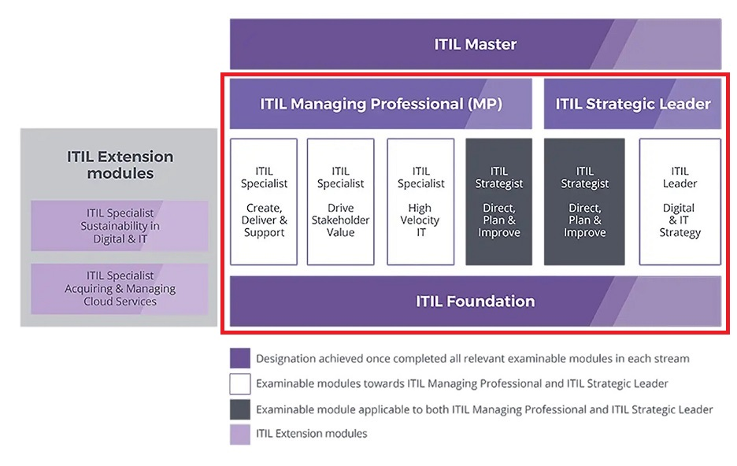
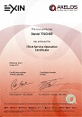
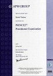
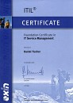
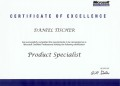

Certifications
Here the list of my certifications:
Date |
Description |
Diploma |
||
|---|---|---|---|---|
| 2022 Axelos Tours |
ITIL v4 Strategic Leader
The ITIL 4 Leader: Digital and IT Strategy module adds a new perspective to the ITIL 4 guidance and helps senior IT and business executives and leaders, heads of department and aspiring C-Suite professionals across the organization to define and lead the strategy for the design and/or management of IT-enabled products and services. By passing this final exam, I have completed all core units of the ITIL v4 certification scheme:  |
|||
| 2021 Axelos Tours |
ITIL v4 Managing Professional
ITIL 4 Managing Professional (ITIL MP) is a stream of four modules that are part of ITIL 4, the next evolution of ITIL. The four modules are:
The Managing Professional (MP) stream provides practical and technical knowledge about how to run successful IT enabled services, teams and workflows. |
|||
| 2019 Axelos Paris |
ITIL 2011 Expert
The ITIL Expert level certification is aimed at those who are interested in demonstrating knowledge of the ITIL Scheme in its entirety. The certificate is awarded to candidates who have achieved a range of ITIL certifications and have achieved a well rounded, superior knowledge and skills base in ITIL Best Practices. |
|||
| 2019 Axelos Paris |
ITIL 2011 MALC - Managing Across the Lifecycle
The MALC module sits between the Intermediate and Expert certifications and is the final required certification towards gaining Expert status. It is intended to help you apply and integrate your knowledge of ITIL in real-world settings and in your own workplace. |
|||
| 2019 Axelos Seclin |
ITIL 2011 CSI - Continual Service Improvement (Lifecycle module)
The CSI certification focuses on how organizations and individuals can strategically review the products and services they have produced following the strategy, design, transition and operation stages of the IT Service Lifecycle and offers guidance on how this process should be organized and executed. It also includes guidance on the tools and technology that can be used to support CSI activities as well as how to evaluate risks and critical success factors. |
|||
| 2018 Axelos Paris |
ITIL 2011 PPO - Planning, Protection and Optimization (Capability module)
The PPO course is designed to develop organizations' and individuals' understanding of the ITIL Service Design processes. It can help ensure that new and updated services, service management systems and tools, technology architecture, processes and measurement systems, methods and metrics are designed to meet user needs and will require little further change once introduced. |
|||
| 2018 Axelos Paris |
ITIL 2011 RCV - Release Control and Validation (Capability module)
The RCV module focuses on the practical application of RCV practices in order to enable the successful planning, testing and implementation of new services that meet the organization’s or users’ needs. The RCV course is designed to develop organizations’ or individuals’ understanding of the ITIL Service Transition processes. It can ensure transitional changes are effectively managed, new services are validated and tested and that release and deployment fulfil organizational requirements. RCV also provides guidance on evaluating change and managing knowledge to improve decision-making processes. |
|||
| 2017 Axelos Paris |
ITIL 2011 OSA - Operational Support and Analysis (Capability module)
The OSA module The module focuses on the practical application of OSA practices in order to enable event, incident, request, problem, access, technical, IT operations and application management. The OSA course can teach organizations and individuals how to manage the everyday operation of IT services and gain a better understanding of how to implement the ITIL processes that will enable them to deliver and support services to customers. |
|||
| 2017 Axelos Lyon |
ITIL 2011 SO - Service Operations (Lifecycle module)
The SO module focuses on the coordination and execution of activities that enable the ongoing management and operation of the products or services developed or implemented during the service strategy, design and transition phases of the IT Service Lifecycle as well as any technology and support resources that are used to deliver them. Understanding of Service Operation best practice enables organizations and IT teams to effectively sustain and maintain the products and services they develop and ensure that they provide efficient resources for their users. |
 | ||
| 2016 Axelos Lyon |
ITIL v3 Foundation
The Information Technology Infrastructure Library (ITIL) is an integrated set of best-practice recommendations. The Foundation exam is the entry level certification and offers a general awareness of the key elements, concepts and terminology used in the ITIL service lifecycle, including the links between lifecycle stages, the processes used and their contribution to service management practices. |
|||
| 2013 ETS Tours |
TOEIC - Test of English for International Communication
For more than 30 years, the TOEIC® Listening and Reading test has set the standard for assessing English-language listening and reading skills needed in the workplace.
|
|||
| 2013 CompTIA Valencia |
CompTIA Security+
The CompTIA Security+ exam will certify that the successful candidate has the knowledge and skills required to identify risk and participate in risk mitigation activities, provide infrastructure, application, operational and information security, apply security controls to maintain confidentiality, integrity and availability, identify appropriate technologies and products, and operate with an awareness of applicable policies, laws and regulations. |
|||
| 2009 Linguarama Alicante |
English C2 Language Competence Certificate
The C2 level (mastery or proficiency) is the highest level in the Common European Framework classification: |
|||
| 2007 Bogdan Bereza-Jarociński Alicante |
ISTQB® Certified Tester - Foundation
The ISTQB was founded as an
International Software Testing Qualifications Board in Edinburgh in November 2002. The
qualifications are based on a syllabus
The exam for the Foundation Level has more theoretical nature and requests for knowledge about the software development area - especially in the field of testing. |
|||
| 2007 QRP Alicante |
PRINCE2 - Foundation & Practitioner
PRINCE®, which stands for Projects in Controlled Environments, is a project management method covering the organisation, management and control of projects. PRINCE was first developed by the Central Computer and Telecommunications Agency (CCTA), now part of the Office of Government Commerce (OGC), in 1989 as a UK Government standard for IT project management. |
 | ||
| 2006 EXIN Alicante |
ITIL - Foundation v2
The Information Technology Infrastructure Library (ITIL) is an integrated set of best-practice recommendations. This framework essentially defines how to organize the system and network management departments within individual organizations. The concepts support IT service providers in the planning of consistent, documented, and repeatable processes that improve service delivery to the business. ITIL addresses the organizational structure and skill requirements for an IT organization by presenting a comprehensive set of management procedures with which an organization can manage its IT operations. |
 | ||
| 2005 Institute of North American Studies Barcelona |
Project Management Professional (PMP)
Established in 1969, the Project Management Institute (PMI) represents the world's largest professional community engaged in the promotion, maintenance, and advancement of project management practices worldwide. PMI is actively involved in the pursuit of Education and Knowledge Acquisition, Professional Development and Networking, Career Advancement and Professional Standards, Products and Services in the field of project management. PMI's Project Management Professional (PMP ®) Certification is the topmost professional credential for project management professionals. PMI became the world's first organization to achieve International Organization for Standardization (ISO) 9001 recognition for its Certification Program in 1999. With over 75,000 PMPs operating in nearly 120 countries, more and more organizations are recognizing the PMP certification as the industry standard for excellence in project management. |
|
||
| 2005 INTE S.L. Alicante |
Sun Certified Web Component Developer for the Java 2 Platform, Enterprise Edition
1.4
Launched in August 2001 by Sun Microsystems, the Sun Certified Web Component Developer (SCWCD) Certification Exam has become one of the most popular certification in the J2EE domain. This certification tests the knowledge of web components used to develop J2EE applications. This certification is not specific to any J2EE application server vendor. The content of SCWCD 1.4 exam covers new technologies such as Expression Language, JSTL, the new tag methodologies (Tag files and SimpleTag). Besides this it also revamps the existing objectives according to the JSP 2.0 and Servlets 2.4 specifications. |
|||
| 2004 Computacenter Luxembourg |
Sun Certified Java Programmer (SCJP 1.4)
Since its inception in 1995, Java technology has grown in popularity and usage because of its true portability, and so has the esteemed Sun Java Certification. Sun Microsystems has a range of certifications starting from the entry-level Sun Certified Java Programmer (SCJP) to high-level certifications such as Sun Certified Enterprise Architect (SCEA). The Sun Certified Developer for Java 2 Platform is for developers experienced in Java programming language. This certification validates a developer's understanding and familiarity with the basic syntax and structure of the Java programming language. It also proves a developer's ability to create Java technology applications that run on server and desktop systems using Java 2 Platform Standard Edition. |
|||
| 2004 Computacenter Luxembourg |
OMG UML 2.0 Professional (OCUP)
The Object Management Group is an open membership, not-for-profit consortium that produces and maintains computer industry specifications for interoperable enterprise applications. OMG membership includes virtually every large company in the computer industry, and hundreds of smaller ones. Most of the companies that shape enterprise and Internet computing today are represented on the Board of Directors. OMG created OCUP to provide a certification, an objective indication, of your knowledge of UML ®, OMG's Unified Modeling LanguageTM. This will benefit you by giving you an important credential to present to employers and clients. It also benefits companies looking for skilled UML practitioners, by giving them a basis for making hiring and promotion decisions. |
|||
| 2004 On Site Luxembourg |
BEA Weblogic 7 Product Specialist
BEA Education Services offers a number of certification paths focused on BEA product technology, as well as BEA's approach to Service-Oriented Architecture (SOA). The BEA Certification Program provides valuable, measurable rewards to IT professionals, their managers, and the BEA technology-based organizations that employ them. This certification is for developers who can build custom solutions using the BEA WebLogic Platform to implement scalable Web applications that interact with databases, legacy systems and packaged applications. Solution developers are expected to have sophisticated knowledge of application servers with J2EE programming, object-relational concepts, application infrastructure clustering and deployment, Web design theories including MVC, creating and consuming reusable logic, and designing and implementing complex Web interfaces. |

|
||
| 1996 Expertease Strasbourg |
Microsoft Certified Professional (MCP)
Microsoft certifications represent a rich and varied spectrum of job roles and responsibilities. Embraced by industry professionals worldwide, Microsoft certification provides objective validation of the ability to successfully perform critical IT functions. This certification exam measures the ability to implement, administer, and troubleshoot information systems with Microsoft Windows NT Server 3.51. The exam goes beyond testing knowledge, it requires a comprehensive understanding of Microsoft Windows NT Server concepts and procedures. |
 | ||
 , and there is a
hierarchy of qualifications and guidelines for accreditation and examination.
, and there is a
hierarchy of qualifications and guidelines for accreditation and examination.{kind=link}
{kind=link}
{kind=link}
{kind=link}
{kind=link}
{kind=link}
{kind=link}
{kind=link}
{kind=link}
{kind=link}
{kind=link}
{kind=link}
{kind=link}
{kind=link}
{kind=link}
{kind=link}
{kind=link}
{kind=link}
{kind=link}
{kind=link}
{kind=link}
{kind=link}
{kind=link}